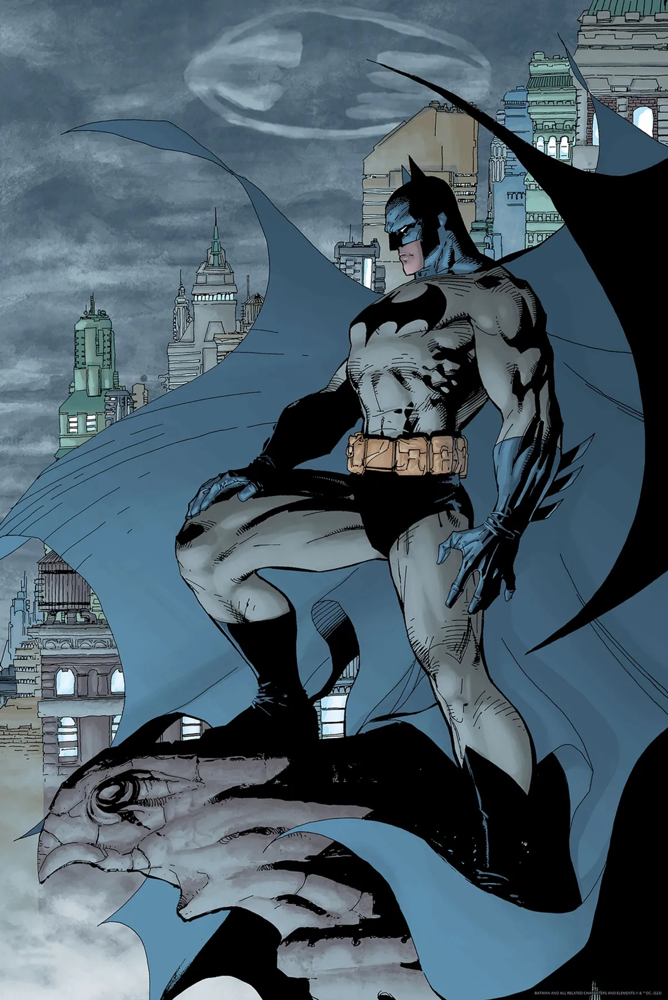
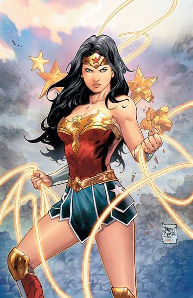
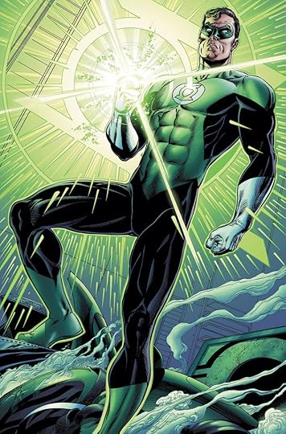
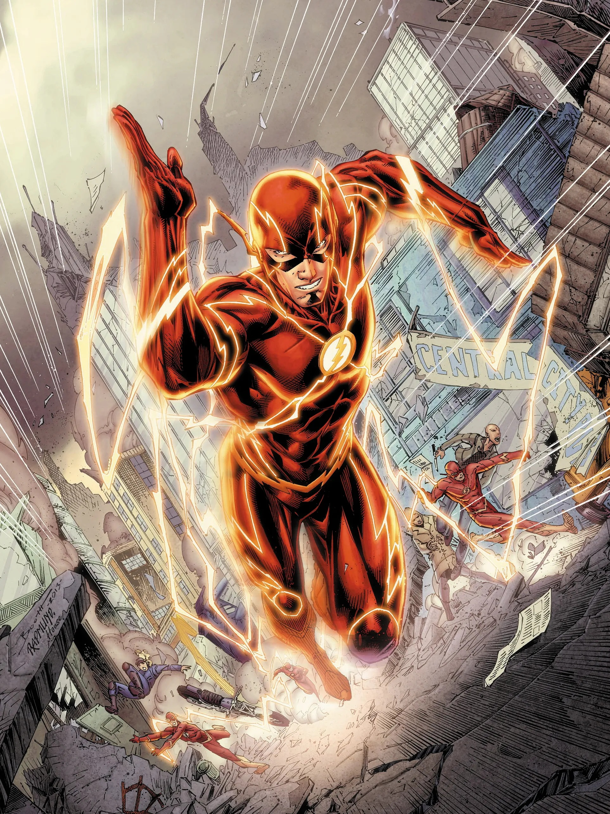

Batman
The caped crusader boasts incredible strength, stamina and endurance while maintaining an extraordinary intellect as the World’s Greatest Detective. Batman is easily able to subdue and defeat opponents twice his physical strength and or size, as well as having the reputation of one of the most powerful superheroes in the DC Universe.
Superman

The man of steel, Superman's abilities include super strength, invulnerability, and flight, along with enhanced senses like super hearing and X-ray vision. He also possesses abilities such as super speed, heat vision, frost breath, and super breath. These powers are primarily attributed to the weaker gravity and solar radiation of Earth, which supercharges his Kryptonian physiology.
Wonder Woman
Wonder Woman's powers include superhuman strength, speed, durability, and agility, as well as flight, a healing factor, and enhanced senses. She is a skilled warrior with a divine heritage that provides her with these abilities, and she also possesses a variety of magical items, such as the Lasso of Truth and her indestructible bracelets.
Green Lantern
Green Lanterns possess a wide range of powers and abilities derived from their Power Ring, which channels willpower into tangible energy. Key abilities include creating energy constructs of any shape or object, flight, and projecting energy blasts. The ring also grants other functions like force-field generation, environmental manipulation, and universal translation, with the extent of these powers limited only by the wearer's willpower and imagination.
The Flash
The Flash's powers are primarily derived from the Speed Force, an extra-dimensional energy source that grants him super speed, enhanced reflexes, and superhuman durability. His abilities also include creating cyclones, phasing through objects by vibrating his molecules, and traveling through time. He can use his speed to heal quickly and possess a frictionless aura to protect himself.